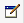

Custom Metadata Tab
Overview
New in 3.7.0, all message processors in Anypoint Studio include the custom metadata tab, which allows you to edit and define metadata types for the data that goes through a specific message processor.
The custom metadata tab replaces functionality formerly used in the DataMapper transformer, which in 3.7.0 has been deprecated and replaced by the DataWeave transformer. The DataWeave transformer does not support metadata type definitions, i.e. it does not automatically define input metadata types. You can define metadata types manually, or you can automatically generate metadata types by using DataSense or the custom metadata editor described in this page.
|
When using the DataWeave transformer, you must use either DataSense or the custom metadata editor to automatically define data types for DataWeave. |
The custom metadata tab is included in all message processors except connectors, which already contribute their own metadata to DataSense. The custom metadata tab allows you to define metadata types for message processors that do not automatically contribute their own types.
The image below shows the Metadata tab on the properties editor of the File Connector.
Clicking Add Metadata (outlined in the image above) opens a new set of fields, shown below.
Clicking the dropdown menus allows you to select between the available metadata types.
The defined metadata types are automatically recognized as inputs by the next message processor in the flow.
You can define the following types of input and output metadata:
-
FlowVars
-
SessionVars
-
Message Inbound Properties
-
Message Outbound Properties
-
Message Payload
|
If editing metadata on an inbound endpoint, only outbound metadata is available. |
Adding More Metadata Types
To define more than one metadata type, click Add metadata in the metadata editor, one time for each metadata type you need to define. To remove a metadata type, click the Remove  icon next to the right of the editor.
icon next to the right of the editor.
Defining a Metadata Type
After adding a new metadata type, you need to perform two actions:
-
Give the new type a name
-
Define the type by selecting an existing type, or creating a new type
To give the metadata type a name, type the name in the name: input field. To define the type, click the edit  icon to the right of the name.
When you click the edit icon, Studio displays the Define Type window, shown below.
If there are metadata types already defined in your project, you can click Select existing type to select from one of the available types. By default, the Define Type window is set to Create new type. When creating a new type, you can choose between four available types:
-
XML
-
JSON
-
CSV
-
JAVA
When you create a new type, you must assign an ID for it, using whatever string is useful for your project. Type the ID in the Id input field. After you create a new type, you can associate any new metadata you create with this new type.
Simple Example
In this example, the application’s flow takes an XML file as input, and passes it to a DataWeave transformer. The DataWeave transformer automatically inherits the input fields from the File endpoint, even if no file has yet been received.
This example uses the XML file displayed below. To complete the example, copy and save this file to your hard drive, as you need to supply it to the metadata editor.
<staff>
<employee>
<firstname></firstname>
<lastname></lastname>
<gender></gender>
<phone></phone>
</employee>
<manager>
<firstname></firstname>
<lastname></lastname>
<gender></gender>
<phone></phone>
</manager>
</staff>To complete the example, create a new project and place a File endpoint as the inbound endpoint in the flow. Click the Metadata tab (see above), then click Add Metadata. Studio displays the metadata editor, shown below.
The field Output: Payload is automatically selected from the drop-down menu. Click the edit icon to edit the field. Studio displays the Define Type window, shown below.
Type a meaningful Id for the metadata type. In this case, we use in_xml.
Click the drop-down menu that displays Schema, then select Example.
Click the ellipsis (…) button to use the filesystem browser to navigate to, then select the example XML file (provided above).
Once you have selected the file, click Finish.
Now, place a Weave transformer in the flow after the File inbound endpoint. The input metadata fields for the Weave transformer are automatically defined, as shown below.
Message processors after the File endpoint inherit the defined metadata. In this example, if you add a new metadata definition to the File endpoint, the new metadata type is also inherited by the DataWeaver transformer, and any message processors that you place after it in the flow.